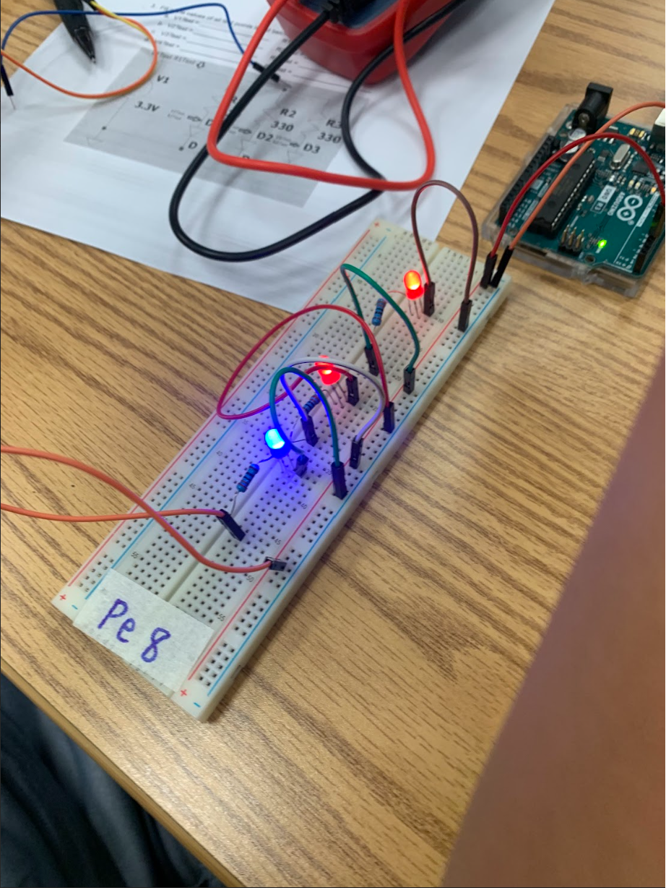

8/21-8/24 Week 1 - This is my first journal entry. This week I learned about the basics in terms of functioning
the AWS website and coding console. I learned all the different codes and what each letter means. We learned
the respective codes for bold, italics, underline, different paragraphs, and a lot more. We officially cemented
our website to Ms. Petrosian on a google spreadsheet and started to test and play around with the code like the title.
We also learned about the safety hazards involved with engineering such as
using the proper glasses to protect your eyes, wearing proper clothing like closed shoes and aprons, and staying sanitzed.
We also did a team building activity where we had to work together as a team to get a marble from point A to point B with
eight tracks and 16 people. It taught us about leadership, teamwork, revising plans, and most importantly, trial and error.
8/28-8/31 Week 2 - Second full week of school, I learned about how to use a program called tinkercad to practice modeling and scaling.
I used my skills to the test for the challenge when I was challenged to make a home appliance and I make a red couch with four pillows on it.
This week we also learned about mechanical engineering and tested our knowledge by taking a quiz on it. We learned about the safety of working in an engineering
environment. We watched a crash course video to understand more about steam engines and many types of engineering to better understand this subject and its branches.
9/5-9/8 Week 3 - This week we indulged more into tinkercad by plotting our project and getting the final finishing touches like making it 1:1 scale correct.
After we finished our tinkercad, we reviewed for our test on mechanical engineering and fluid mechanics. After taking the test, it was time to actually begin on the project
we have been plotting on tinkercad for the last week. Our group divided into different roles like the supplies person, the leader, the cutter, and the one that connects the pieces. We didn't do that much due to time
but we got a good chunk done, we have to bring supplies from home like wheels and finish up on our ramp. A lot of work to do but I believe our group can get this done!
9/11-9/14 Week 4 - This week we were on the final steps of our project. We spent the first two days preparing and finishing our contraption. We got permission from the teacher to use tape on our car to
make our project more efficient and have a higher success rate when testing. We tested it once and it popped the balloon. Fast forward to the final day, we frantically got all of our supplies together
to test our project one final time. We have a limited supply of balloons so we only had one shot and that one shot being our final grade. A bit of a stressful situation but we were confident in our precautions
we took prior to the test. It ended up being a success. The needle on our car with a baseball on top popped the balloon after going down a ramp at enough velocity.
9/19-9/22 Week 5 - This week in engineering, we came across two challenges given by our teacher. One of which was to create a paper contraption, almost like a boat or a ship that can stay afloat. There was a twist,
the twist was that it had to float for five minutes on water and be strong enough to hold weights. We got to choose how much weight we can put on our boats because we measured it in grams by a scale. Once you choose your
weights you couldn't go lighter or heavier and the heaviest boat that stayed afloat wins. I got overcofident and put a 45g golf ball that made my boat sink. I got too over confiden but for the next challenge It was to design an "E" with measurements.
I designed my E well but the blueprint I recieved from another student didn't mathematically add up so I gave them a 7/10. We ended of the week by learning some more about computer engineering and taking notes on them for our quiz next week!
9/25-9/29 Week 6 - Absent :(
10/2-10/6 Week 7 - This week in engineering, I had to make up some work due to my absence the week prior. I took a quiz on computer engineering and computer parts like CPU, GPU, RAM, etc. I believed I did well
on the quiz but I still haven't gotten my results. Continuing forward, my teacher presented me with a project to create a prosthetic hand out of cardboard, rubber bands, and strings. We did this project because we
watched a video on Monday about prosthetic body parts like hearts actually functioning on human beings. I made a prototype but my teacher said it was a 8/10 at best and I was not satisfied so I did some changes and made it
look more modernizd and improved. After a few tweaks and changes I showed her again and I was able to complete the challenge of picking up a water bottle! I am very happy with the outcome and enjoyed the projet overall, can't wait to make more improvements. (ABSENT ON THU SO ONLY TALKED ABOUT MON & TUE)
10/9-10/13 Week 8 - This week in engineering, we only had two days of work so it wasn't too busy. We started by learning about aerospace engineering and watching a video with a slideshow that teaches us all about the subject.
Later that same day we had a quiz on a previous topic we covered, computer engineering. After covering aerospace engineering we got a heads up that there'll be a quiz on that shortly as well. Using our knowledge we learned from
aerospace engineering, we made a tinkercad to resembles exactly that. I went on tinkercad and made a airplane. It was quite difficult to get everything to be symmetrical but I eventually added the wings and the body. We had to make it
realistic because we were going to recreate this project on a two liter plastic bottle so I had to remove some unrealistic features like a cockpit. Next week we create our tinkercad into real life.
9/16-10/20 Week 9 - This week we created a rocket that would eventally be filled with water and pressurized air and the farthest rocket wins. My partner and I went with a plan to use our root beer bottle which was 2 liters,
and make four fins that are right triangles about 4 inches by 5 inches. We then grabbed paper and wrapped it in a cone on top of our bottle so it helped with the travel in the air. We glued everything together and eventually
finished. When it was time for testing, we filled it with about 3/4 cup of water and 80psi. Our rocket went far but not the furthest. Our rocket went a bit to the side and I believe that is due to the cardboard fins that bent too
easily and messed up the direction. Next time I'd use stronger material and a little less water because it was weighing it down.
10/23-10/27 Week 10 - This week in engineering, we had a test on environmental engineering so we had to study it. What I learned from studying this subject was how important environmental engineers are to our society and to the earth. They
constantly look for solutions for problems to water pollution, air pollution, and other things that harm our environment. To learn more about this, we did a project where we had to use four items: cotton balls, sand, rocks, and pebbles in any order
we wanted to help purify water. My partner and I put cotton last, then pebbles, then sand, then rocks and our water got more pure but not pure enough to drink. I wouldn't call it a success but I wouldn't call it a failure. I believe if we were to purify it
through the process a few more times then it'd be way more clear but it did the job. What I'd do differently is keep the order but just purify it more and I'm confident it would look more clear than what we had.
10/30-11/3 Week 11 - This week in engineering, we learned about electrical engineering. Firstly, we started with Ohm's law which was a bunch of math equations that we plug in. We can plug in stuff like voltage, current, and resistance. The main formula is
V=IR where the V stands for voltage with the unit of volts, the I stands for current which is an amps, and the R stands for resistence which is measured in ohms. Once we finished the worksheets we expanded more into electrical engineering by focusing on circuit
boards on tinkercad. We had two labs, one of which was to have enough voltage to light up our switch on the tinker cad. The other lab was a litte bit more difficult by having a parallel and series board. Parallel is when the LED's are parallel to each other but
series is when they are all connected. We also used a multimeter in the tinkercad to see how many volts our circuit board generated.

11/6-11/10 Week 12 - This week in engineering, we used what we learned on tinkercad with the breadboard and practiced in person. We got four different labs assigned to us. We had to make a standard circuit and a parallel and series. It took a while but we had
to light up a few bulbs and use a multimeter which is a tool that measures the amount of electricity in any units. It can be measured in volts, amps, or ohms. My partner and I worked together and to measure the electricity, I had to use a metallic pin and make
contact with another metallic pin to show the level of electricity there is inside the breadboard displayed on the multimeter. For lab 1-3, it was an in-person on hands type project but for lab 4 which we still didn't finish because the due date got extended,
we started it and it was different from the other 3 labs because this one was online.
11/13-11/17 Week 13 - This week in engineering, we learned about the business part of engineering. We matched what we learned with shark tank because business engineering is engineering/creating a product that can be used in the business field to create profit.
This ties in with advertisement, to promote your product and managing revenew to invest more into the product or other new products that can be created for that business. In class, we got assigned a task to brainstorm a product idea that we can pitch in a show
like shark tank. My partner and I thought of multiple ideas, one of them being a two in one cologne and deodrant spray, another being a portable X-Ray that can be installed on your phone to anaylze bone or muscle injuries, and finally which is my favorite idea
is a cheating pen with a clickable button that pushes a paper out that you can write on to remember something, the ideas aren't finalized and there is still more time to brainstorm but those are the three ideas that we thought of so far for this project.
11/27-12/1 Week 14 - This week in engineering, we were assigned with the task to pitch a shark tank project, last week we brainstormed and we decided to not go with any of the ideas we brainstormed before thanksgiving break. I came out with the idea of
having a wireless measuring tool that has a 3 piece product. 2 of the pieces are pins that repesent Point A and Point B and the 3rd piece is a small screen that displays the distance wirelessly between the two pins. The screen has buttons on the side
that allows the customer to change the unit of measurement. It's targetting to hobbyist and people in the construction field which allows it to be far easier to use than a normal measuring tape. When we pitched the idea, we had only one question about
the "PinMeter Pro" which is the name we decided on. The question we got was how the pin sticks and we answered with a multi-method way, with a pin that can stick into a surface, or a sunction cup.
12/4-12/21 Week 15 - 1) Our spaghetti bridge weighed around 52 grams and 2) held around 3,800g of water when held two feet apart and held down on both sides. 3) The ratio is around 1:72 from weight and weight held. 4) Our bridge design was very straight forward because
it was just a straight line that was very girthy and thick. We bombarded the middle with a lot of spaghetti and glue so it's stable and strong when the water is added to hold. I believe the insane thickness of our bridge contributed to it being able to hold
and maintain the weight. My group had a very strong winning mentality so we focused more on holding weight than design so we did the most simple but strongest design by stacking the spaghetti all together so its strong enough to hold a lot of water. 5) There was no research done,
or inspiration, we just wanted to win. 6) It worked as expected, looking at my other classmates bridges made me confident because none of theirs were as thick as ours so I knew ours was the strongest and it did very well. 7) The point of failure was too much water and the middle broke gradually.
I expected the middle to break because that's the only place it could've broken. 8) The way to improve the bridge was to add more noodles or more glue. If we were also more precise with the placement of the glue then it could've lasted longer
1/8-1/12 S2 Week 1 - This week in engineering, caught up on our time without internet by updating our websites and catching up on assignments. After finishing that, we learned about chemical engineering. I learned that most engineering branches are connected
like for example chemical engineering is connected to branches we already learned like environmental engineering and stuff related to business engineering like marketting. Similar to things we learn in high school chemistry, chemical engineers work with mineral
processing, nanotechnology, and molecular engineering. There are many careers in chemical engineering like an energy manager, chemist, food scientist, production manager, and several other fields for careers. We finished the week with a lab where we had to make
Ooblek with corn starch and water with an option to use food coloring. I didn't do good because I used too much water and messed up, but not too bad for my first time making ooblek. I didn't use food coloring and just kept it white, the original color but I learned a lot.
1/15-1/19 S2 Week 2 - This week in engineering, I got assigned with my partner Daron to build and develop a mouse trap car. After watching a video from Mark Rober on what the project is about, we got assigned a google doc that would help us throughout the project. We
would have to brainstorm and talk about how we would build our car, what milestones we are looking to accomplish by a certain date and time, the materials needed, and many other details to make sure we well organized heading into this big project that we have been given
around six weeks to complete. I researched about how to make our car fast which the ultimate solution was just to have your disc wheels to be very thin and light weight. We also researched how to make it durable so we decided to add minimal tape around the circumference of the wheel
so it removes friction to make it faster and hold everything together. Finally to make sure our car went far, we researched and found out that we need bigger axles and smaller wheels for it to go the distance we want it to so we can succeed and successful complete this project.
1/22-1/26 S2 Week 3 - This week in engineering, we completely finished the designing of our project. I had to leave early for a soccer game the day that we were supposed to sketch out the design and dimensions of the sides on paper but thankfully my partner completed it so
when I came to class the next period, I got right to work on the tinkercad. We made a few minor adjustments when building the tinkercad because we took the proportionality into consideration and changes the size of the stick and slightly adjusted the size of the main platform for
the mouse trap. After completing the shapes I just put it all together and colored it to match and look more appealing and realistic. I had some spare time before class ended so I put some more details into the mouse trap for looks. I looked at our Project Proposal and in the Schedule
of milestones, we stated that we needed to complete the first prototype, no excuses, but it might be difficult because I will miss most of class due to a soccer game for both Tuesday and Thursday.